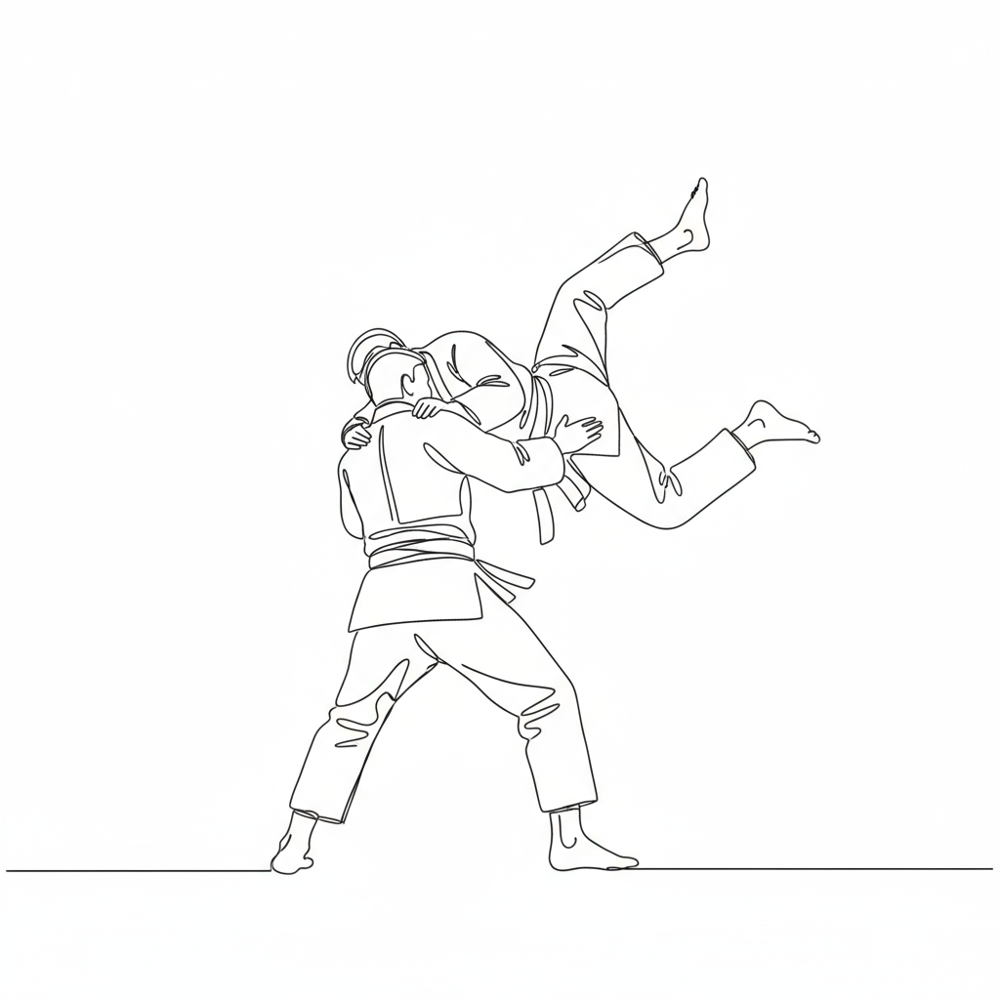
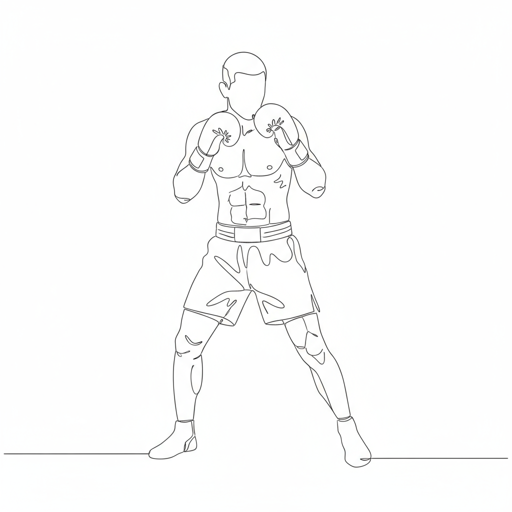
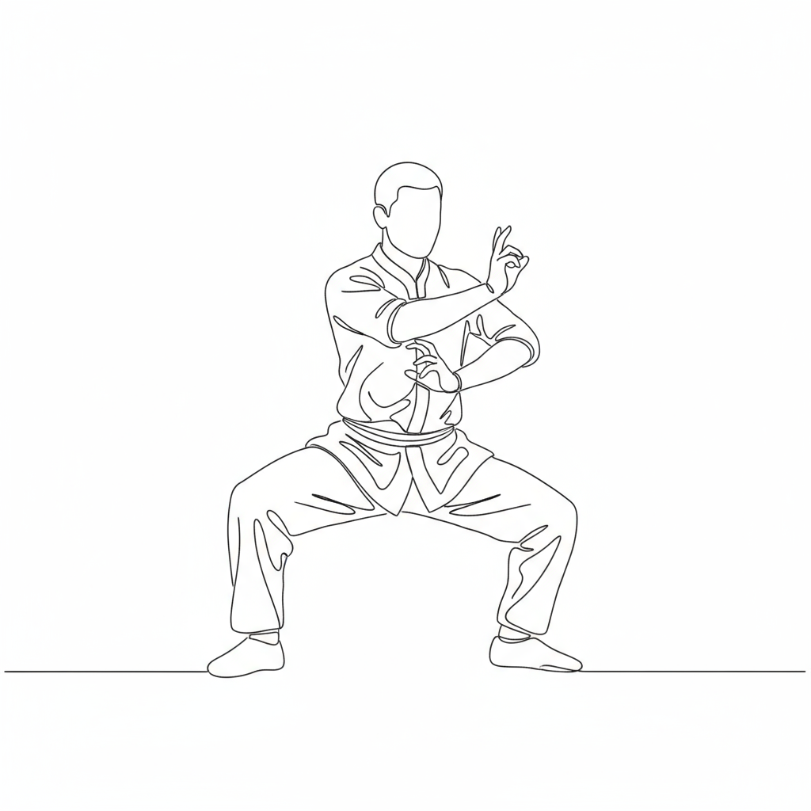
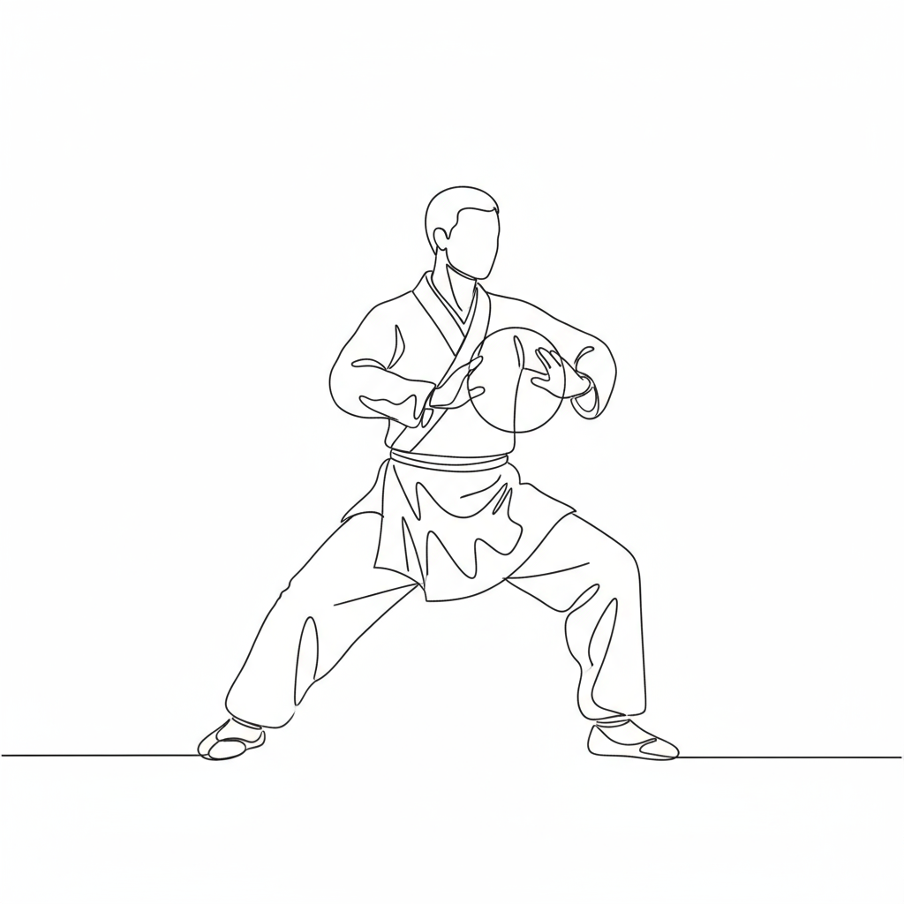
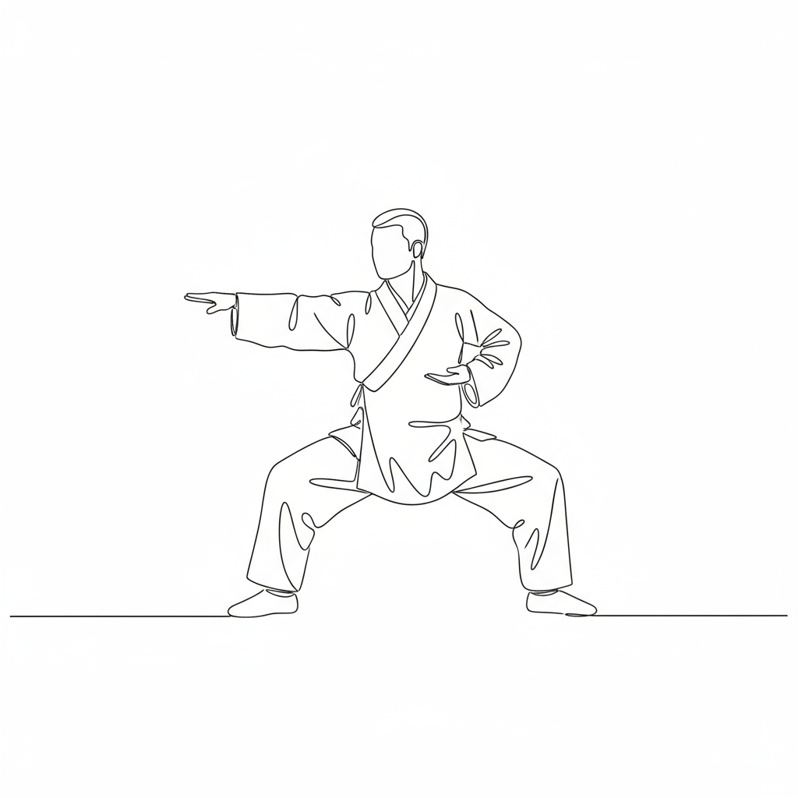

Martial Arts Journey
A thirty-year exploration of martial arts and Eastern philosophy.
Introduction
My martial arts journey began at the age of four and has spanned over three decades, encompassing various disciplines from Japanese and Chinese martial traditions. This path has not only been about physical training but also a deep exploration of Eastern culture, philosophy, and personal development.
-
Judo (柔道)
Roma, 1973–1985
I began my martial arts practice at the age of 4 with Judo at Dojo Zen in Rome (zona prenestino labicano). Under the guidance of Masters T. Carmeni and A. Monti, I progressed to brown belt, participating in local and regional competitions.
-
Kung Fu – Dae Woung
Roma, 1990–1992I practiced Chinese martial arts with an instructor who was a student of Master Shin. This non-orthodox syncretic style combined elements from Northern Praying Mantis, Shaolin, and Baguazhang.
-
Kung Fu – Sanda (散打)
Roma, 1998–2006
I trained in Chinese boxing (Sanda) under Master G. Collalti of Master C. Capaldi's school, who was a student of Choo Kang Sing (Lam Kiun Pak Toi style, Choo family lineage).
-
Kung Fu – Qixing Tanglangquan (七星螳螂拳)
Roma, 2003–2015
I began training at Master A. Parapetti's school (a student of Master Shin Dae Woung), practicing the Seven Star Praying Mantis style. The school later merged with that of Master S. Falanga. I participated in several seminars with Grand Masters Zhong Lian Bao and Lin Dongzhu.
-
Kung Fu – Baguazhang Cheng Style (程氏八卦掌)
Roma, 2010–2016
I practiced with Masters M. Ria and G. Capriglia, learning both a non-orthodox version of the "Eight Trigrams" style and the orthodox Cheng style. I attended seminars with Masters Kong Cheng and Han Yan Wu (students of Grand Master Liu Jing Ru).
-
Kung Fu – Taichichuan Chen Style (陳式太極拳)
Roma, 2017–2019
I trained with Master Gianna Sabatelli, a disciple of Grand Master Chen Xiaowang.
-
Kung Fu – Baguazhang Yin Style (尹氏八卦掌)
Roma, 2020I studied with Master M. Ria, a disciple of Master Zhao Min Hua in the Yin style.
-
Kung Fu – Taichichuan Chen Style (陳式太極拳)
Roma, 2023–2025I currently train with Master Antonella Carrara, a student of Master Fu Neng Bin, who is a disciple of Grand Master Chen ZhengLei.
-
Additional Interests and Training
Throughout the years, I have also explored Bajiquan (八極拳) and Wu Style Taijiquan (吳氏太極拳), participating in training seminars with Masters Zu Yao Wu (for Bajiquan) and Zhao Min Hua (for Taijiquan).
Philosophy and Practice
This journey through various martial arts has been more than physical training—it has been a continuous exploration of discipline, balance, and the deep philosophical traditions of the East. Each style has contributed unique perspectives on movement, strategy, and the cultivation of both body and mind.